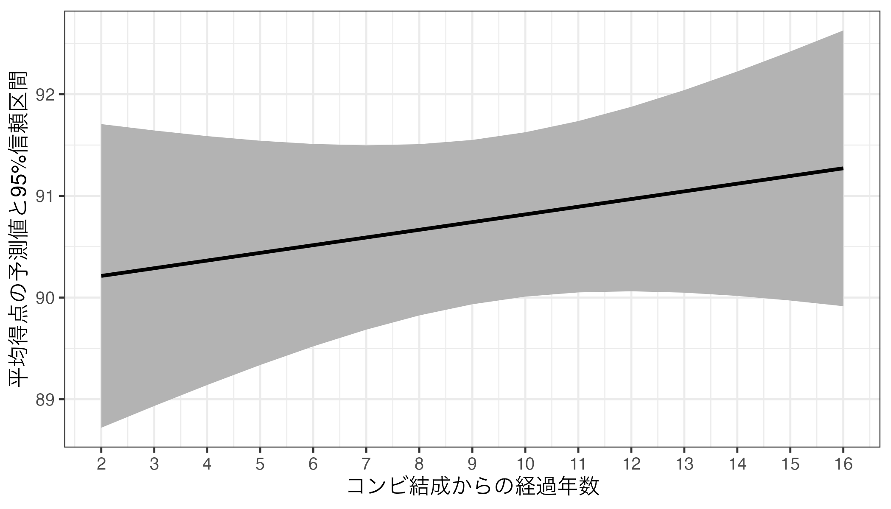
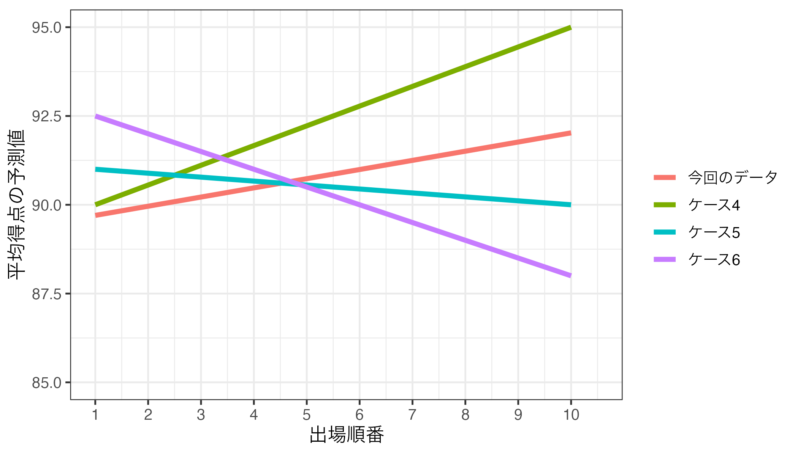
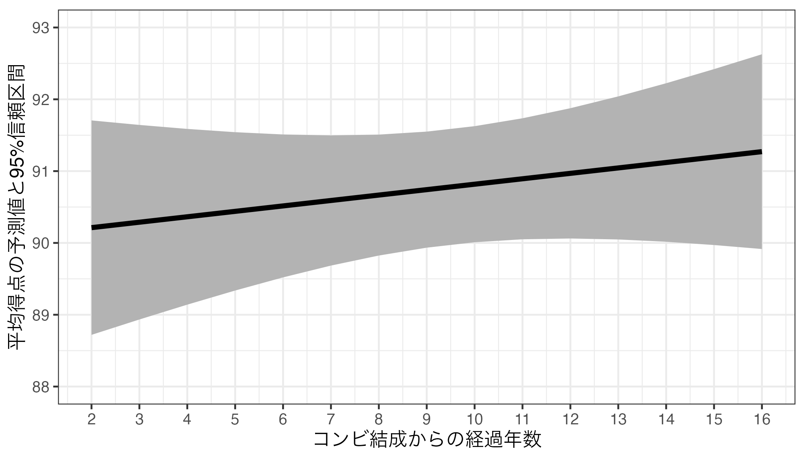
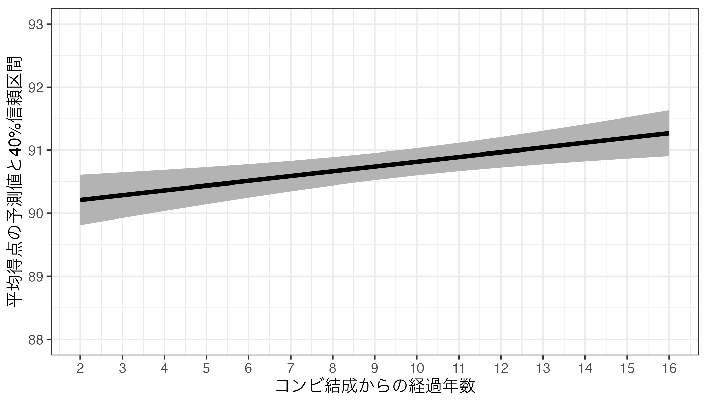

第10回講義資料
分析結果の報告
スライド
分析結果をどう示すか
前回までは線形回帰分析の理論、推定、解釈方法を紹介したが、この分析結果をレポートや論文に提示する場合はどうすれば良いだろうか。分析手法ごとに報告方法は異なるが、本講義では線形回帰分析に焦点を当てる1。
それでは本日の実習で使用するパッケージとデータを読み込んでおこう。馴染みの{tidyverse}と{modelsummary}に加え、今回は{marginaleffects}というパッケージも使用する。宋がこの授業のためにセットアップしたJDCat分析ツールであれば、既にインストールされているが、自前のPCにインストールしたR + RStudioを使用する場合、コンソール上でinstall.packages("marginaleffects")と入力し、インストールしてから読み込んでおこう。
データはM1.csvであり、LMSから入手可能だ。read_csv()内のパスは適宜修正すること。読み込んだデータはdfと名付け、作業環境上に格納する。
このデータはある暇な研究者が集めたM-1グランプリのデータの一部だ。フルバージョンのデータはここから入手できる。データは60行8列であり、各変数の詳細は以下の通りだ。
| 変数名 | 説明 | 備考 |
|---|---|---|
No |
第X回大会 | 第13回（2017年）から |
Year |
大会年度 | |
Name |
コンビ名 | |
Duration |
結成からの経過年数 | |
First |
初出場ダミー | 1 = 初出場 / 0 = その他 |
Final |
ファイナルステージへの進出有無 | |
Order |
出場順番 | 1から10 |
Score_Mean |
平均得点 | 7人の審査委員からの評価の平均値 |
分析に入る前にデータの記述統計を計算する。{summarytools}パッケージのdescr()を使用するが、1回使うためにわざわざ{summarytools}を読み込むのも面倒なので、summarytools::descr()で関数を呼び出そう2。
Code 02
Descriptive Statistics
df
N: 60
Mean Std.Dev Min Max N.Valid
---------------- --------- --------- --------- --------- ---------
No 15.50 1.72 13.00 18.00 60.00
Year 2019.50 1.72 2017.00 2022.00 60.00
Duration 10.60 3.70 2.00 16.00 60.00
First 0.52 0.50 0.00 1.00 60.00
Final 0.30 0.46 0.00 1.00 60.00
Order 5.50 2.90 1.00 10.00 60.00
Score_Mean 91.33 2.40 84.86 97.29 60.00 本日の内容は分析結果をどう報告するかに関するものなので、予めいくつかの回帰モデルを推定しておこう。今回は平均得点（Score_Mean）を応答変数とした線形回帰モデルを推定する。説明変数は出場順番（Order）、初出場ダミー（First）、芸歴（Duration）の3つを用意する。出場順番（Order）のみ投入した単回帰モデルをfit1、初出場ダミー（First）を加えたものをfit2、全て投入したモデルをfit3と名付ける。
回帰表
単一モデルの例
回帰分析の推定結果（切片や傾きの点推定値、標準誤差、信頼区間、\(p\)値、決定係数など）はsummary()関数で簡単に確認できる。
Call:
lm(formula = Score_Mean ~ Order + First + Duration, data = df)
Residuals:
Min 1Q Median 3Q Max
-6.7504 -1.1301 0.4781 1.1794 5.8539
Coefficients:
Estimate Std. Error t value Pr(>|t|)
(Intercept) 89.60482 1.29065 69.426 <2e-16 ***
Order 0.25820 0.10397 2.483 0.016 *
First -0.96314 0.62264 -1.547 0.128
Duration 0.07559 0.08566 0.883 0.381
---
Signif. codes: 0 '***' 0.001 '**' 0.01 '*' 0.05 '.' 0.1 ' ' 1
Residual standard error: 2.279 on 56 degrees of freedom
Multiple R-squared: 0.1437, Adjusted R-squared: 0.09787
F-statistic: 3.134 on 3 and 56 DF, p-value: 0.03256 しかし、これは分析する側が結果を確認するために用意されたものであり、「他人に見せる」ために用意されたものではない。レポートや論文に推定結果を示す場合は表を使う場合が多いが、summary()関数から得られたものはあくまでの文字列のみだ。ここで便利なのが{modelsummary}パッケージである3。使い方は簡単でmodelsummary(回帰オブジェクト名)のみで良い。
| (1) | |
|---|---|
| (Intercept) | 90.078 |
| (0.649) | |
| Order | 0.227 |
| (0.105) | |
| Num.Obs. | 60 |
| R2 | 0.075 |
| R2 Adj. | 0.059 |
| AIC | 275.6 |
| BIC | 281.9 |
| Log.Lik. | -134.800 |
| F | 4.727 |
| RMSE | 2.29 |
一発でかなりきれいな表ができた。デフォルトでは切片と傾き係数の点推定値と標準誤差（カッコ内）が表示される。また、分析に使用されたサンプルサイズ（Num.Obs.）や適合度指標（決定係数（R2）、調整済み決定係数（R2 Adj.））なども表示される。これでも十分良いが、ここからはより自分好みの表にするためにいくつかカスタマイズしてみよう。
その前に前提知識としてmodelsummary()では各変数に対応する統計量が2行構成になっていることを意識する必要がある。デフォルトだと1行目は点推定値、2行目はその標準誤差である。modelsummary()関数ではestimate（1行目）とstatistic（2行目）引数で出力される統計量を変更することができる。デフォルトだとestimateは点推定値（"{estimate}"）、statisticは標準誤差（"({std.error})"）になっている（カッコ付き）。つまり、modelsummary(オブジェクト名)はmodelsummary(オブジェクト名, estiamte = "{estimate}", statistic = "({std.error})")と同じコードだ。このように"{統計量}"の形式で表示する統計量が選択できる。たとえば、\(p\)値は"{p.value}"、95%信頼区間の下限は"{conf.low}"、上限は"{conf.high}"だ4。もし、特定の行を消したい場合はNULLを割り当てる。
それではいくつかの例を確認してみよう。まずは標準誤差の代わりに\(p\)値を表示する例からだ。
| (1) | |
|---|---|
| 注：カッコ内はp値 | |
| (Intercept) | 90.078 |
| (<0.001) | |
| Order | 0.227 |
| (0.034) | |
| Num.Obs. | 60 |
| R2 | 0.075 |
| R2 Adj. | 0.059 |
| AIC | 275.6 |
| BIC | 281.9 |
| Log.Lik. | -134.800 |
| F | 4.727 |
| RMSE | 2.29 |
切片（(Intercept)）の\(p\)値が<0.001と表示されているが、これは\(p\)値が0.001より小さい、つまり非常に小さいことを意味する。これなら\(\alpha = 0.001\)で検定を行っても統計的に有意であると判定できる水準である。また、note引数で表の下に注も付けることができる。2行目の統計量が何の統計量か分からない人もいるかも知れないので、このように付けておくことをおすすめする。
次の例は、点推定値と標準誤差を一行にまとめる例だ。たとえば「点推定値 (標準誤差)」のようにまとめるとする。2行目（statistics）にはNULLを割り当てて各変数の2行目を削除し、1行目（estimate）は"{estimate} ({std.error})"と指定すれば良い。
Code 07
| (1) | |
|---|---|
| 注：カッコ内は標準誤差 | |
| (Intercept) | 90.078 (0.649) |
| Order | 0.227 (0.105) |
| Num.Obs. | 60 |
| R2 | 0.075 |
| R2 Adj. | 0.059 |
| AIC | 275.6 |
| BIC | 281.9 |
| Log.Lik. | -134.800 |
| F | 4.727 |
| RMSE | 2.29 |
また、以下のように標準誤差を90%信頼区間に変えることもできる。デフォルトでは95%信頼区間が表示されるので、90%を使いたい場合はconf_levelを0.9に変える必要がある。
Code 08
| (1) | |
|---|---|
| 注：カッコ内は90%信頼区間 | |
| (Intercept) | 90.078 |
| [88.993, 91.163] | |
| Order | 0.227 |
| [0.053, 0.402] | |
| Num.Obs. | 60 |
| R2 | 0.075 |
| R2 Adj. | 0.059 |
| AIC | 275.6 |
| BIC | 281.9 |
| Log.Lik. | -134.800 |
| F | 4.727 |
| RMSE | 2.29 |
モデルの当てはまりの良さ、評価指標として本講義では決定係数（\(R^2\)）と調整済み決定係数（Adjusted \(R^2\)）を紹介した。これらの統計量は適合度指標（goodness of fit; gof）と呼ばれるが、分析手法によって使用可能な適合度指標が異なる。{modelsummary}のget_gof()関数を使えば、使用可能な適合度指標が出力される。以下はfit3の適合度指標を出力するコードだ。
aic bic r.squared adj.r.squared rmse nobs F logLik
1 274.9891 285.4609 0.1437456 0.09787483 2.201864 60 3.133708 -132.4946 基本的には上記のすべての適合度指標がmodelsummary()で出力されるが、gof_map引数で一部だけ出力させることもできる。今回のような線形回帰分析ならサンプルサイズ（"nobs"）、決定係数（r.squared）、調整済み決定係数（"adj.r.squared"）程度で十分だろう。それではこの3つの指標のみ出してみよう。3つの指標となるのでc()でcharacter型ベクトルを割り当てれば良い。
Code 10
| (1) | |
|---|---|
| 注：カッコ内はp値 | |
| (Intercept) | 89.605 (<0.001) |
| Order | 0.258 (0.016) |
| First | -0.963 (0.128) |
| Duration | 0.076 (0.381) |
| Num.Obs. | 60 |
| R2 | 0.144 |
| R2 Adj. | 0.098 |
複数モデルの例
一つの表に複数の推定結果を並べることもでいる。方法は回帰オブジェクトをlist()でまとめるだけだ。
| (1) | (2) | (3) | |
|---|---|---|---|
| (Intercept) | 90.078 | 90.570 | 89.605 |
| (0.649) | (0.684) | (1.291) | |
| Order | 0.227 | 0.245 | 0.258 |
| (0.105) | (0.103) | (0.104) | |
| First | -1.136 | -0.963 | |
| (0.590) | (0.623) | ||
| Duration | 0.076 | ||
| (0.086) | |||
| Num.Obs. | 60 | 60 | 60 |
| R2 | 0.075 | 0.132 | 0.144 |
| R2 Adj. | 0.059 | 0.101 | 0.098 |
自動的に（1）、（2）、…のようにモデル名が付くが"モデル名" = オブジェクト名のように書くと任意のモデル名も指定できる。
Code 12
| Model 1 | Model 2 | Model 3 | |
|---|---|---|---|
| (Intercept) | 90.078 | 90.570 | 89.605 |
| (0.649) | (0.684) | (1.291) | |
| Order | 0.227 | 0.245 | 0.258 |
| (0.105) | (0.103) | (0.104) | |
| First | -1.136 | -0.963 | |
| (0.590) | (0.623) | ||
| Duration | 0.076 | ||
| (0.086) | |||
| Num.Obs. | 60 | 60 | 60 |
| R2 | 0.075 | 0.132 | 0.144 |
| R2 Adj. | 0.059 | 0.101 | 0.098 |
やや話がずれるが、表示される変数名を変えることもできる。変数名のままになると読者は「この変数って何？」と思うかも知れない。いきなり表を見せつけられても解釈ができる表が良い表なので、なるべく元の変数名ではなく、ちゃんと言葉で書いておこう。変数名の修正はcoef_rename引数で調整でき、書き方は"元の変数名" = "新しい変数名"である。複数の変数名を変更する場合、c()でまとめる。
Code 13
| (1) | (2) | (3) | |
|---|---|---|---|
| 切片 | 90.078 | 90.570 | 89.605 |
| (0.649) | (0.684) | (1.291) | |
| 出場順番 | 0.227 | 0.245 | 0.258 |
| (0.105) | (0.103) | (0.104) | |
| 初出場ダミー | -1.136 | -0.963 | |
| (0.590) | (0.623) | ||
| 結成からの経過年数 | 0.076 | ||
| (0.086) | |||
| Num.Obs. | 60 | 60 | 60 |
| R2 | 0.075 | 0.132 | 0.144 |
| R2 Adj. | 0.059 | 0.101 | 0.098 |
回帰表の可視化
余談だが、回帰表も図にすることができる。最近の政治学では回帰表を使う人も多いが、図で回帰表を示す人も急増している。ここでは{modelsummary}のmodelplot()関数を紹介しよう。使い方はmodelsummary()と非常に似ており、まずmodelplot()内に回帰オブジェクト名を入れておけばそれっぽい図が生成される。
Code 14
- 1
- 切片を表示しない
- 2
- 表示順番を「下」からDuraion、First、Orderの順に
- 3
- x = 0に破線を引く
modelplot()から作成された図は{ggplot2}ベースなので+でレイヤーの追加および調整できる。本講義の履修者は{ggplot2}なしでは生きていけない人のはずなので非常に嬉しい知らせだろう。modelplot()の詳細はコンソール上で?modelplotを入力してヘルプを見るか公式ページで確認してみよう。他にも{coefplot}というパッケージも人気だ5。
予測値の可視化
これまでは推定結果をどう示すかに焦点を当ててきた。回帰表のみを示し、言葉でその解釈をする程度で終わるレポート、論文も多いが、説明変数と応答変数間の関係をより直感的に示す方法もある。それは予測値を可視化することである。「出場順番が1番目は予測点数がXX点、2番目はYY点、….」というのを棒グラフや折れ線グラフなどで示すと、分析結果がより理解しやすくなるだろう。ここでは{marginaleffects}と{ggplot2}6パッケージを使用し、予測値を可視化方法を紹介する。具体的な手順は以下の通りだ。
- {marignaleffects}の
predictions()関数で予測値7を計算し、オブジェクトとして格納する。ここから表形式オブジェクトが得られる。 - 1から得られた表を加工する。
predictions()から得られる表には規則があり、予測値はestimate列、信頼区間の下限と上限はconf.lowとconf.high列という決まりがある。加工せず可視化に移るケースも多いが、必要があればラベル付けやfactor化などを施す。 - {ggplot2}を用いて作図する。予測値と信頼区間（主に95%信頼区間を使用する）を示すのが一般的であり、横軸上の値が少ない場合、point-rangeプロット（
geom_pointrange()）を、横軸上の値が多い場合、折れ線グラフ（geom_line()）とリボン（geom_ribbon()）を組み合わせて紹介する。
予測値の計算
まず、予測値の計算から始めよう。ここでは3つの説明変数をすべて投入したfit3を利用する。最初の例として初出場ダミー（First）の値が0の場合と1の場合の、Score_Meanの予測値（\(\widehat{\mbox{Score\_Mean}}\)）はを計算してみよう。fit3の推定結果、以下のような1次関数が得られた。
\[ \widehat{\mbox{Score\_Mean}} = 89.605 + 0.258 \cdot \mbox{Order} - 0.963 \cdot \mbox{First} + 0.076 \cdot \mbox{Duration}. \]
この数式のFirstの箇所に0を入れた場合と、1を入れた場合の\(\widehat{\mbox{Score\_Mean}}\)を計算すれば良いが、問題はOrderとDurationである。何らかの数字を入れる必要はあるが、ここに0を入れるのは不自然なのでここではOrderとDurationはその平均値（それぞれ5.5、10.6）を入れ、Firstだけ0と1を入れる。
「OrderとDurationはその平均値（それぞれ5.5、10.6）を入れ、Firstだけ0と1を入れる」という言葉は、論文では「OrderとDurationはその平均値に固定し、Firstのみを動かす」とよく表現される。今回の例だと「First以外の共変量はすべて平均値に固定する」とも言えよう。
まず、初出場（First = 1）の場合の平均得点の予測値を計算してみよう。
続いて、初出場ではない（First = 0）場合も計算してみよう。
他の条件が平均である場合、初出場コンビの予測平均得点は90.8556点、2回以上出場したコンビの予測平均得点は91.8186点である。
今回はFirstの値が2種類（0と1）しかなかったため、これだけでも良いかも知れないが、OrderやDurationは10以上の値で構成されているため、このような作業は非常に面倒だ。ここで、{marginaleffects}のpredictions()関数を使えば簡単に計算ができるようになる。使い方は以下の通りだ。
全く同じ計算をpredictions()関数で行い、結果をfit3_pred1という名の新しいオブジェクトを作業環境内に格納する。
First Estimate Std. Error z Pr(>|z|) S 2.5 % 97.5 % Order Duration
0 91.8 0.436 211 <0.001 Inf 91 92.7 5.5 10.6
1 90.9 0.421 216 <0.001 Inf 90 91.7 5.5 10.6
Type: response
Columns: rowid, estimate, std.error, statistic, p.value, s.value, conf.low, conf.high, Order, Duration, First, Score_Mean この結果に無駄な情報はないが、とりあえず注目するのはFirstの値、予測値、予測値の不確実性指標（主に信頼区間）である。ここではEstimate列が予測値、2.5%と97.5%列が95%信頼区間の下限と上限だ。また、OrderとDuration列を見るとそれぞれ5.5と10.6で固定されていることが分かる。
むろん、First以外の変数を平均値以外に固定することもできる。何より、「出場順番が5.5」というのはあり得ないし、芸歴10.6年というのも分かりにくい。以下では先ほどと同じ計算をするが、出場順番を5番目、芸歴を5年に固定してみよう。これはdatagrid()内で指定できる。
Code 18
First Order Duration Estimate Std. Error z Pr(>|z|) S 2.5 % 97.5 %
0 5 5 91.3 0.725 126 <0.001 Inf 89.9 92.7
1 5 5 90.3 0.572 158 <0.001 Inf 89.2 91.4
Type: response
Columns: rowid, estimate, std.error, statistic, p.value, s.value, conf.low, conf.high, First, Order, Duration, Score_Mean 作図
作図に入る前に注意事項について説明する。これは{marginaleffects}パッケージに仕様に関わるものである。先ほど出力したfit3_pred2で表示される列名は「本当の」列名ではない。表示された列名はユーザーが読みやすいように列名が変更されてから出力されており、fit3_pred2の列名とは異なる。たとえば、Estimate列には予測値が表示されているが、本当の列名はestimateだ。「本当の」列名が見たい場合はprint(オブジェクト名, style = "data.frame")と入力する（data.frame(オブジェクト名)でもOK）。
rowid estimate std.error statistic p.value s.value conf.low conf.high First Order Duration
1 1 91.27377 0.7253367 125.8364 0 Inf 89.85214 92.69541 0 5 5
2 2 90.31063 0.5723738 157.7826 0 Inf 89.18880 91.43246 1 5 5
Score_Mean
1 89.42857
2 89.42857 しかし、作図によく使うのは動かしている変数名（ここではFirst）に加え、予測値（estimate）、信頼区間の下限（conf.low）と上限（conf.high）、\(p\)値（p.value）であるため、慣れてしまえば自然に覚えられる。
以上の内容を頭の片隅に置いといた上で、作図してみよう。予測値の図には主に予測値の値（点推定値）とその不確実性を表す信頼区間（区間推定値）を示す必要があり、これら両方に対応できる図がpoint-rangeプロット（「キャタピラープロット」とも呼ばれる）である。{ggplot2}でもgeom_pointrange()幾何オブジェクトが用意されており、必須マッピングは以下の4項目だ。
x：説明変数（ここではFirst）y：予測値（ここではestimate）ymin：信頼区間の下限（ここではconf.low）ymax：信頼区間の上限（ここではconf.high）
それでは作図をし、fit3_pred2_plot1と名付けよう。
Code 20

このfit3_pred2_plot1のままでも良いかも知れないが、横軸と0.25、0.50、0.75目盛りは無駄なので0と1のみ残したい。横軸が数値型変数の場合、目盛りの調整にはscale_x_continuous()レイヤーを使用する。今回使う引数はbreaksとlabelsであり、それぞれ目盛りの位置と目盛りのラベルのベクトルを割り当てる。目盛りの位置は0と1なのでbreaks = c(0, 1)、またはbreaks = 0:1であり、それぞれの目盛りに対応するラベルを指定する。今回は0と1を表示させるのでlabels = c("0", "1")にするが、labels = c("その他", "初出場")でも良い。

同じやり方で出場順番（Order）と平均得点（Score_Mean）間の関係も可視化してみよう。まずは予測値の計算からだ。
Order Estimate Std. Error z Pr(>|z|) S 2.5 % 97.5 % First Duration
1 89.7 0.637 141 <0.001 Inf 88.5 90.9 1 10.6
2 90.0 0.563 160 <0.001 Inf 88.9 91.1 1 10.6
3 90.2 0.500 180 <0.001 Inf 89.2 91.2 1 10.6
4 90.5 0.453 200 <0.001 Inf 89.6 91.4 1 10.6
5 90.7 0.425 213 <0.001 Inf 89.9 91.6 1 10.6
6 91.0 0.423 215 <0.001 Inf 90.2 91.8 1 10.6
7 91.3 0.445 205 <0.001 Inf 90.4 92.1 1 10.6
8 91.5 0.489 187 <0.001 Inf 90.5 92.5 1 10.6
9 91.8 0.549 167 <0.001 Inf 90.7 92.8 1 10.6
10 92.0 0.621 148 <0.001 Inf 90.8 93.2 1 10.6
Type: response
Columns: rowid, estimate, std.error, statistic, p.value, s.value, conf.low, conf.high, First, Duration, Order, Score_Mean 続いて可視化してみよう。geom_pointrange()のxのマッピングがFirstからOrderに変わっただけだ（当たり前だが、横軸（x）にマッピングされた変数が変わったのでlabs()でラベルも修正する必要がある）。
Code 23
最後に芸歴（コンビ結成からの経過年数; Duration）と平均得点（Score_Mean）間の関係も確認してみよう。
Duration Estimate Std. Error z Pr(>|z|) S 2.5 % 97.5 % Order First
2 90.2 0.762 118 <0.001 Inf 88.7 91.7 5.5 1
3 90.3 0.691 131 <0.001 Inf 88.9 91.6 5.5 1
4 90.4 0.624 145 <0.001 Inf 89.1 91.6 5.5 1
5 90.4 0.563 161 <0.001 Inf 89.3 91.5 5.5 1
6 90.5 0.508 178 <0.001 Inf 89.5 91.5 5.5 1
7 90.6 0.462 196 <0.001 Inf 89.7 91.5 5.5 1
8 90.7 0.430 211 <0.001 Inf 89.8 91.5 5.5 1
9 90.7 0.412 220 <0.001 Inf 89.9 91.6 5.5 1
10 90.8 0.412 220 <0.001 Inf 90.0 91.6 5.5 1
11 90.9 0.430 211 <0.001 Inf 90.1 91.7 5.5 1
12 91.0 0.463 197 <0.001 Inf 90.1 91.9 5.5 1
13 91.0 0.508 179 <0.001 Inf 90.0 92.0 5.5 1
14 91.1 0.563 162 <0.001 Inf 90.0 92.2 5.5 1
15 91.2 0.625 146 <0.001 Inf 90.0 92.4 5.5 1
16 91.3 0.692 132 <0.001 Inf 89.9 92.6 5.5 1
Type: response
Columns: rowid, estimate, std.error, statistic, p.value, s.value, conf.low, conf.high, Order, First, Duration, Score_Mean 続いて可視化してみよう。
Code 25
今回はgeom_pointrange()のみで可視化してきたが、横軸の値が多くなりすぎると、ムカデのような形となり、かなり気持ち悪くなる。このような場合、折れ線グラフとリボン（geom_ribbon()）の組み合わせが有効だ。geom_ribbon()は信頼区間を示す時によく使うものであり、x、ymin、ymaxにマッピングする必要がある。geom_pointrange()と使い方は同じだが、予測値の情報を持たないため、yは不要だ。まずは、リボンだけ出してみよう。
Code 26

このリボンの上に折れ線グラフを乗せるだけだ。ただし、リボンのデフォルト色はかなり暗めなので線が見えにくくなるだろう。リボンの色を明るめの灰色（"gray70"程度）にし、線はやや太め（1）にしてみよう。
Code 27
- 1
-
geom_ribbon()とgeom_line()は同じ横軸を共有するため、ここでマッピングした方が効率的 - 2
- デフォルトのリボンは暗い色なので、明るめの色に変える。
- 3
-
linewidthで折れ線グラフの太さを調整（1だとデフォルトよりやや太め）

信頼区間の話
これまで信頼区間（confidential intervals; CI）を「とりあえず」出してきたが、この信頼区間って何だろう。もう一度、出場順番（Order）と平均得点（Score_Mean）間の関係を見てみよう。以下の図はfit3_pred3の推定結果から得られた回帰直線である。

しかし、タイムマシンがあると仮定し、過去に戻ってもう一度、M-1グランプリが行われ、データを収集し、同じ分析を行ったら今の回帰直線とは異なる直線が得られるだろう。むろん、全く同じ回帰直線が得られる可能性もゼロではないが、むしろその可能性が低く、若干の違いはあるだろう。たとえば、以下のような回帰直線が得られたとしてもおかしくなかろう。

しかし、今回得られた回帰直線と大きく異なる、例えば以下のような回帰直線が得られる可能性は非常に低いだろう。

もう一度過去に戻ってM-1グランプリが行われ、同じ手順でデータ収集&分析をしたら、今私たちが持っているデータから得られた回帰直線と似た直線は得られてもおかしくないし、大きく異なるものは非現実的である。この「ありえる」直線が収まる範囲が信頼区間だ。つまり、「この範囲（信頼区間）外の直線が得られる可能性は非常に低い！」ことを意味する。


一つ面白い点は、傾き係数が正に統計的有意であれば、この区間内に引ける直線は必ず右上がりになることだ8。今まで見てきた図は、出場順番（Order）と平均得点（Score_Mean）間の関係であり、出場順番（Order）の傾き係数は\(\alpha\) = 0.05で統計的有意だった。この場合、95%信頼区間内に右上がりの直線しか引けない。
一方、芸歴（Duration）は\(\alpha\) = 0.05で統計的に有意でなかった（\(p\) = 0.381）。以下の図は出場順番（Order）と平均得点（Score_Mean）間の関係を可視化ものである。
このように、95%信頼区間内に水平線も、右上がり直線も、右下がり直線も引ける。これはDurationとScore_Meanの関係（右上がりか、右下がりか、関係なしか）は現段階では判断できないことを意味する。
社会科学では主に有意水準\(\alpha\)を0.05（5%）に設定するが、10%か1%を使う場合もある。注意すべき点は使用する\(\alpha\)に応じて使用する信頼区間も変わる点だ。たとえば、\(\alpha\) = 0.1を仮定するのであれば、90%（\(= (1 - \alpha) \times 100\)）信頼区間を使うこととなる。もう一度、芸歴（コンビ結成からの経過年数; Duration）と平均得点（Score_Mean）間の関係も確認してみよう。ただし、今回は70%信頼区間（\(\alpha\) = 0.3）を使用する。95%以外の信頼区間を使うためにはpredictions()内のconf_levelで指定する必要がある。たとえば、90%信頼区間（\(\alpha\) = 0.1）であれば0.9、99%信頼区間（\(\alpha\) = 0.01）であれば0.99である。以下の図では比較のために左に95%信頼区間（\(\alpha\) = 0.05）も出している。
Code 28
fit3_pred5 <- predictions(fit3, newdata = datagrid(Duration = 2:16),
conf_level = 0.7)
fit3_pred5 |>
ggplot(aes(x = Duration)) +
geom_ribbon(aes(ymin = conf.low, ymax = conf.high), fill = "gray70") +
geom_line(aes(y = estimate), linewidth = 1.5) +
scale_x_continuous(breaks = 2:16, labels = 2:16) +
labs(x = "コンビ結成からの経過年数", y = "平均得点の予測値と95%信頼区間") +
coord_cartesian(ylim = c(88, 93)) +
theme_bw(base_size = 12)
\(\alpha\)を大きくすればするほど、信頼区間が狭くなることが分かる。fit3における芸歴（Duration）の\(p\)値は0.381であり、\(\alpha\) = 0.05では統計的に有意ではなかった（\(0.381 > 0.05\)だから）。しかし、\(\alpha\) = 0.6を採用すると統計的に有意になる（\(0.381 < 0.6\)だから）。この場合、信頼区間は40%信頼区間（\((1 - \alpha) \times 100\)%信頼区間）を使うことになる。以下は予測値と40%信頼区間を示したものだ。
Code 29
predictions(fit3, newdata = datagrid(Duration = 2:16),
conf_level = 0.4) |>
ggplot(aes(x = Duration)) +
geom_ribbon(aes(ymin = conf.low, ymax = conf.high), fill = "gray70") +
geom_line(aes(y = estimate), linewidth = 1.5) +
scale_x_continuous(breaks = 2:16, labels = 2:16) +
labs(x = "コンビ結成からの経過年数", y = "平均得点の予測値と40%信頼区間") +
coord_cartesian(ylim = c(88, 93)) +
theme_bw(base_size = 12)
信頼区間がかなり狭くなっていることが分かる。この区間であれば右上がりの直線しか引けなくなる。以下の図の青い線は区間内で引ける最も緩やかな傾きの直線であるが、それでも右上がりになっている9。
注
ロジスティック回帰分析、交互作用付きの回帰分析については今後解説する。↩︎
読み込んでいないパッケージの関数は
パッケージ名::関数名()で使用可能だ。今回の場合以外にも、読み込んだ複数のパッケージに同じ名前の関数がある場合、「どのパッケージの関数か」を指定する際にも使用する。↩︎{modelsummary}以外のも回帰表作成に特化した様々なパッケージがあり、その中でも{stargazer}という根強い人気を誇るパッケージもある。\(\LaTeX\)ユーザーなら{stargazer}の方がカスタマイズの幅が広く、使い勝手が良いかも知れない。↩︎
他にも
"{stars}"というのもよく使われるが、これは邪悪なものなので間違ってでも調べないようにしよう。↩︎存在感のない{coefplotbl}という謎のパッケージもある。興味のある方でも間違ってでも調べないこと。↩︎
{ggplot2}パッケージは{tidyverse}パッケージと一緒に読み込まれるので別途読み込む必要はない。↩︎
今後紹介するロジスティック回帰分析の場合、
predictions()関数を使うと予測「確率」が表示される。また、交差項を含むモデルの場合は予測値・予測確率以外にもslopes()関数で限界効果を計算し、可視化する必要がある。いずれも今後の講義で紹介する。↩︎逆に、傾き係数が負に統計的有意であれば、この区間内に引ける直線は必ず右下がりになる。↩︎
青い線の左端の座標は\((x = 2, y = 90.61244)\)、右端の座標は\((x = 16, y = 90.90845)\)であり、ほんの僅かではあるが、右上がりの線である。↩︎